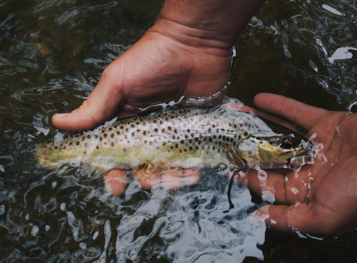

Fish Haven
5 Day Forecast
Paradise for Residence
by Kurt Friedemann
FISH HAVEN, Idaho — It's an undiscovered paradise. Most people who drive by recognize the raw beauty of a place ringed by high desert mountains and bordered by the shores of a vast natural lake. In winter the hills outside this small paradise echo with the sharp whine of snow machines and in the summer thousands of tourists ply the lake's bright blue waters with water skis or fishing poles. But they don't live there. It's different living in Fish Haven. The little town sits just on the Idaho side of U.S. Highway 89 tucked in between Bear Lake's west side and the mountains. It's not technically a city or a town, it's really nothing more than the proverbial wide spot in the road. But people call it a town even though there isn't a city council, just the Bear Lake County Commission that oversees development there. Only 50 to 100 people call it home, depending on the weather. Vic Tilt, co-owner of Gladys' Place, is one of the few year-around residents and said the population drops quickly when things get cold. The winter evacuation isn't much of a worry for Tilt, 60, because his store is the only one around. The nearest other store is in Montpelier, about 45 minutes away. Gladys' Place is also only a few minutes from the Utah border and has become quite a lottery spot. The little store is the third- and fourth-biggest lottery ticket seller in Idaho, selling about 500,000 tickets a year. "We've got a whole mall in 1,000 square feet," Tilt said. Because it is the only business in Fish Haven, Gladys' Place sells it all — liquor, groceries, videos, tourist gifts and some of the best deli sandwiches around — and also serves as post office, Gladys Tilt said. Yep, you guessed it, Gladys' Place is 58-year-old Gladys Tilt's place. The Tilts opened the little store in April 1994 and have been steeped in tourist fun and local tradition ever since. Before 1994 the couple had been working for a corporation in Salt Lake City.

Outside Weather
📍 30 North 1st East Preston, ID 83263
☎ 111.222.3333
✉ outsideweather.gmail.org